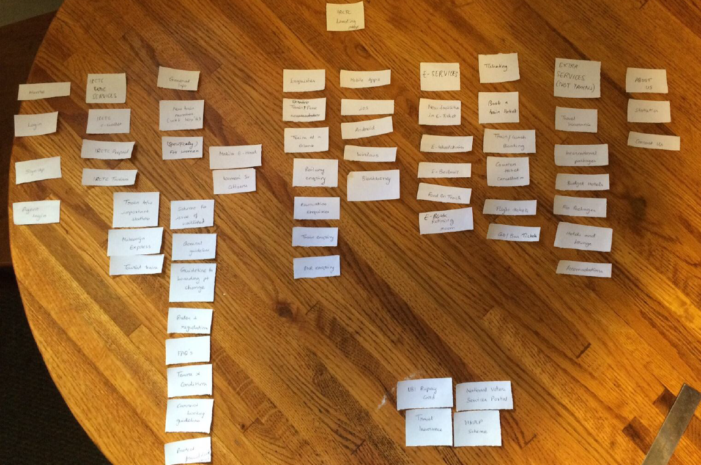

IRCTC - Indian Trains site
A first time user have to struggle a lot, to book or cancel a train ticket. The main use cases of this site are as follows:
1. Booking a train ticket
2. Cancel a train ticket
3. Enquire train status
4. Check train schedules
5. Check ticket confirmation statuses.
6. Tourism – tourist or special trains.
7. Concessions for women, senior citizens etc.
Problem Statement
Though I know the problems myself, I decided to get the actual feedback from the user. Hence, I decided to employ card sorting technique. However, before sorting, here is a portion of original site map of the site.
Original sitemap
The original sitemap is so huge, that I could only cover here a portion of it. The beauty is, on clicking many of the links on the landing page, it redirects us to same page of another website, defeating the purpose of having those as separate links or dropdown menus.
Anyways, here's the portion of original sitemap.

Card sorting
Then, I performed card sorting with 3 users. Here are a few samples. Open Card sorting is a technique, where users are given small sheets of each topic and we ask them to align the way they would like to view it in the website.
Anyways, here's the card sorting by two users.
Card sorting by Person A

Card sorting by Person B

Observations on Card sorting
Here are my observations on open card sorting. 1. No one understood what ‘food on truck’ card meant. It actually meant e-catering services.
2. Users did not understand what each page is meant for – For ex: trains at a glance, trains between important places, new trains as all these looked to achieve similar tasks.
3. They were not sure where to add ‘counter ticket cancellation’.
4. One user was not sure to add/sort around 3-4 topics like ‘Rupay Card’, ‘National Voters Services Portal’, under any of the main topics card.
5. They actually created new card topics like – E-Services, Ticketing, Extra Services because they could not find a suitable main card for some cards.
6. Also, they placed almost 20+ cards under a card topic which is different from current website, which indicates how the site has design flaws with respect to user’s mental model.
Based on card-sorting, I have redesigned the new sitemap for the same site.
Before that, I created a user flow diagram to understand things better.
User Flow diagram - a rough sketch

Final Revised site map

With all these learnings and understandings about the problem, here's how I would storyboard the main use cases to a user. You can see from the diagram, that these are highly user-friendly and self-explanatory.
Storyboarding the main use cases


If you want to learn more about my interests, please email me at aarthi@brown.edu.